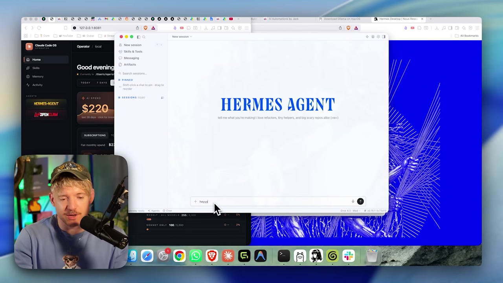
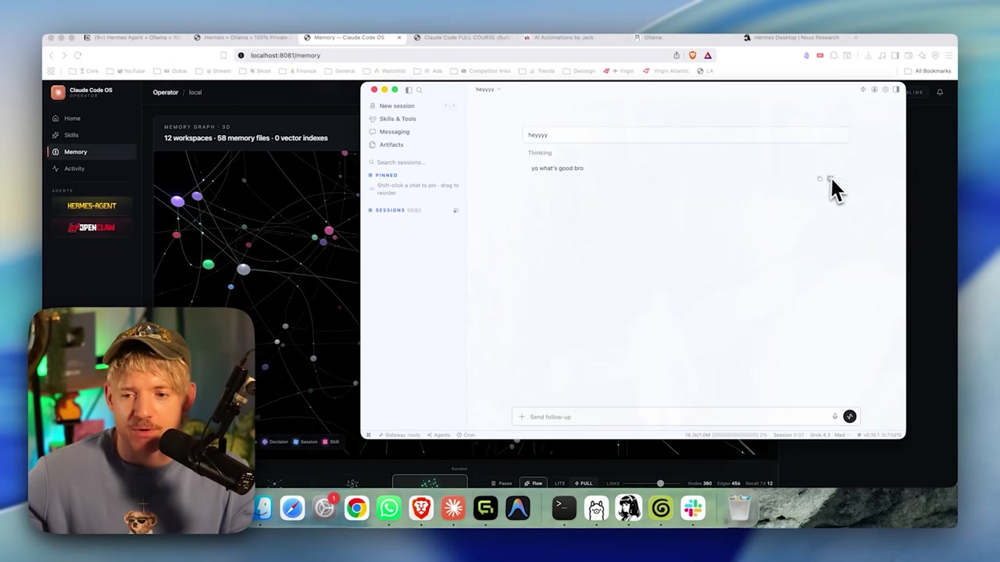

🖥️ App desktop, terminal e Telegram
Com o agente conectado, agora e sobre como falar com ele. O Hermes oferece tres portas — app desktop, terminal e Telegram — e algumas ferramentas que mudam o jogo: sessions, branch/fork de conversa e artifacts. Este e o ultimo modulo pratico antes dos projetos.
🖥️ O app desktop
A porta mais amigavel para o Hermes e o app desktop. Ele tem cara de aplicativo de chat: voce abre, comeca uma sessao e conversa — sem precisar decorar comandos. Para quem acha o terminal intimidante, e por aqui que vale comecar.

Dica: o app desktop e o terminal sao duas portas para o mesmo agente. Escolher um nao desliga o outro — e questao de conforto. Comece no app; migre para o terminal quando quiser comandos.
Conceitos-chave
Interface grafica de chat para o Hermes.
Bom ponto de partida para iniciantes.
Inicia uma nova conversa com o agente.
App e terminal falam com o mesmo agente.
⌨️ O terminal
Para quem gosta de controle, o Hermes tambem vive no terminal. Voce ja viu alguns comandos (update, status, doctor). Aqui entram mais dois: hermes dashboard, que abre o painel, e hermes setup, para a configuracao inicial.
🎯 Objetivo
Abrir o painel do Hermes e (se ainda nao fez) rodar a configuracao inicial — tudo pela linha de comando.
hermes dashboard
hermes setupComo verificar: hermes dashboard abre o painel do agente; hermes setup conduz a configuracao inicial. Para checar a saude antes, lembre de hermes status e hermes doctor (modulo 2.5).
✓ Quando o terminal brilha
- ✓Automacao e scripts.
- ✓Diagnostico rapido (status/doctor).
- ✓Acesso a maquinas remotas/servidores.
- ✓Controle fino de tudo.
🖥️ Quando o app brilha
- •Uso diario e conversa.
- •Visualizar sessions e artifacts.
- •Sem decorar comandos.
- •Conforto para iniciantes.
Conceitos-chave
Abre o painel do agente.
Faz a configuracao inicial.
Terminal e ideal para automacao.
App e terminal, mesmo agente por baixo.
💬 Telegram: o agente no seu bolso
A terceira porta e a mais surpreendente: voce pode falar com o seu agente pelo Telegram, como se ele fosse um contato. Voce manda uma mensagem no celular, e o Hermes — rodando na sua maquina em casa — responde. E o seu agente local acessivel de qualquer lugar, por um app de chat que voce ja usa.
📲 O que isso destrava
- •Mobilidade: fale com o agente sem estar na frente do computador.
- •Familiaridade: a interface e o chat do Telegram, que voce ja conhece.
- •Continuidade: a inteligencia mora na sua maquina; o celular e so o controle remoto.
Atencao a privacidade: usar o Telegram coloca um app de mensagens no meio do caminho. Para tarefas com dados sensiveis, lembre dos modos da Trilha 1 — voce vai aprofundar isso no Projeto 7 (Trilha 3), onde o agente no celular e o tema central.
Conceitos-chave
Falar com o agente por um app de chat.
O celular comanda; o cerebro fica em casa.
Acesso de qualquer lugar.
A Trilha 3 aprofunda o uso no celular.
🗂️ Sessions: conversas que persistem
Uma session e uma conversa salva com o agente. Voce comeca uma "New session", trabalha nela, fecha o app — e pode voltar depois exatamente de onde parou. Diferente de um chat efemero, a session persiste: o contexto daquela tarefa fica guardado.
New session
Cada tarefa pode ter a sua propria conversa, separada das outras.
Persistencia
Feche e reabra: a session continua la, com o historico preservado.
Organizacao
Separar por session evita misturar contextos de tarefas diferentes.

Conceitos-chave
Conversa salva e retomavel com o agente.
O historico sobrevive ao fechar o app.
Fixar as sessions mais importantes.
Uma tarefa por session evita mistura.
🌿 Branch / fork de chat
Aqui esta um recurso poderoso: voce pode forkar uma conversa. Num ponto qualquer, o chat se divide em duas linhas que partem do mesmo historico mas seguem caminhos diferentes — como uma estrada que bifurca. Util para explorar duas abordagens sem perder nenhuma.
Novo aqui? "Branch" (ramo) e "fork" (bifurcacao) vem do mundo do codigo: significam criar uma copia que parte de um ponto comum e segue por conta propria. Numa conversa, isso deixa voce testar "e se eu pedisse de outro jeito?" sem apagar a versao original.
No ponto de fork, a conversa se divide: a branch A testa um caminho e a branch B outro, ambas partindo do mesmo historico. Voce compara as duas sem perder nenhuma — ideal para "e se eu tentasse de outro jeito?".
Conceitos-chave
Dividir uma conversa em duas linhas.
As duas linhas partem do mesmo ponto.
Testar abordagens sem perder a original.
A versao de partida continua intacta.
📦 Artifacts: salvar e ver as saidas
Quando o agente produz algo concreto — um arquivo, um trecho de codigo, um documento — isso vira um artifact. Em vez de ficar perdido no meio da conversa, o resultado e guardado como um objeto que voce pode ver, abrir e reaproveitar depois. E o jeito do Hermes nao deixar o seu trabalho escorrer pelo chat.
📦 Por que artifacts importam
- •Resultado nao se perde: a saida fica separada do bate-papo.
- •Reaproveitavel: voce volta nele depois, em outra session.
- •Tangivel: o trabalho do agente vira algo que voce guarda, nao so texto que rola na tela.
💡 Fechando a Trilha 2
Voce instalou o Ollama, escolheu o modelo, criou o qwen3-coder-64k, conectou ao Hermes e agora sabe falar com ele por tres portas, organizar em sessions, forkar conversas e guardar artifacts. A base esta pronta — na Trilha 3, tudo isso vira projetos reais.
Conceitos-chave
Uma saida concreta salva pelo agente.
O resultado nao se perde na conversa.
Voce volta nele em outra session.
Sai do efemero e vira algo guardavel.
Auto-checagem (opcional): o que e fazer "fork" de uma conversa no Hermes?
🎯 Resumo do modulo
Fim da Trilha 2! Proxima parada:
Trilha 3 — Projetos: cada modulo vira um projeto pratico com o que voce montou aqui.